Citater
100 citater med kilde og billedlicens. Hvert citat er kontrolleret mod kilden af en uafhængig gennemgang.
Iværksættere

Your time is limited, so don't waste it living someone else's life.Steve Jobs 1955–2011 Commencement address, Stanford University, 2005 · Delivered 12 June 2005; official text as prepared for delivery, Stanford Report (14 June 2005), third story ('death') Foto: Bernard Gotfryd (Library of Congress, Bernard Gotfryd Photograph Collection), Public domain, via Wikimedia Commons (https://commons.wikimedia.org/wiki/File:Steve_Jobs_January_1984.jpg) · Public domain

Sometimes life's gonna hit you in the head with a brick. Don't lose faith.Steve Jobs 1955–2011 Commencement address, Stanford University, 2005 · Delivered 12 June 2005; Stanford Report text as now published at the cited URL (follows the speech as delivered), second story ('love and loss') Foto: Bernard Gotfryd (Library of Congress, Bernard Gotfryd Photograph Collection), Public domain, via Wikimedia Commons (https://commons.wikimedia.org/wiki/File:Steve_Jobs_January_1984.jpg) · Public domain

If something's important enough you should try. Even if … the probable outcome is failure.Elon Musk born 1971 60 Minutes (CBS News), 'Tesla and SpaceX: Elon Musk's industrial empire', interview by Scott Pelley, 2014 · Broadcast 30 March 2014; CBS transcript, Musk's answer to 'Then why try?' Foto: Steve Jurvetson, CC BY 2.0, via Wikimedia Commons (https://commons.wikimedia.org/wiki/File:Elon_Musk_2015.jpg) · CC BY 2.0
I don't ever give up. I mean, I'd have to be dead or completely incapacitated.Elon Musk born 1971 60 Minutes (CBS News), 'SpaceX: Entrepreneur's race to space', interview by Scott Pelley, 2012 · Broadcast 18 March 2012 (rebroadcast 3 June 2012); CBS transcript, answer after Pelley asks whether he ever thought of packing it in Foto: Steve Jurvetson, CC BY 2.0, via Wikimedia Commons (https://commons.wikimedia.org/wiki/File:Elon_Musk_2015.jpg) · CC BY 2.0

Failure is only the opportunity more intelligently to begin again. There is no disgrace in honest failure; there is disgrace in fearing to fail.Henry Ford 1863–1947 My Life and Work (in collaboration with Samuel Crowther), Garden City, NY: Doubleday, Page & Co., 1922 · Introduction, 'What Is the Idea?' (the same two sentences recur in Chapter XIX, 'What We May Expect') Foto: Hartsook, photographer., Public domain, via Wikimedia Commons (https://commons.wikimedia.org/wiki/File:Henry_ford_1919_(cropped).jpg) · Public domain
.jpg){kind=link}
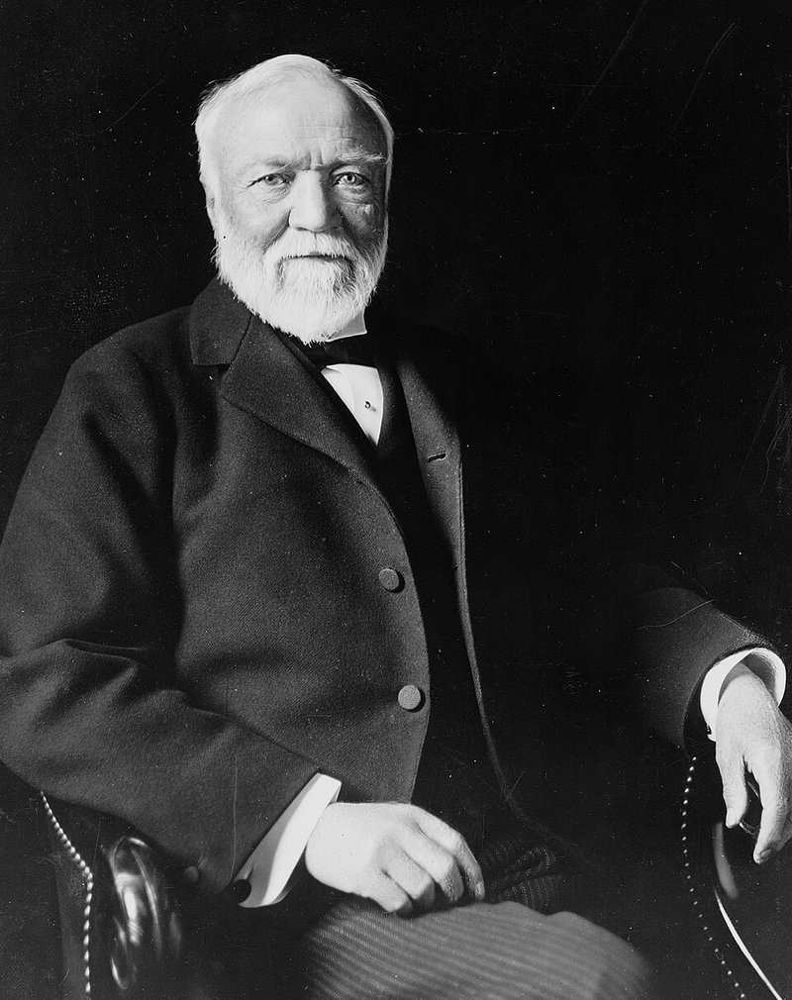
Here is the prime condition of success, the great secret: concentrate your energy, thought, and capital exclusively upon the business in which you are engaged.Andrew Carnegie 1835–1919 'The Road to Business Success: A Talk to Young Men', address to students of Curry Commercial College, Pittsburgh, 23 June 1885; reprinted in The Empire of Business (New York: Doubleday, Page & Co.), 1885 (book 1902) · The Empire of Business (1902), p. 17 Foto: Theodore C. Marceau, Public domain, via Wikimedia Commons (https://commons.wikimedia.org/wiki/File:Andrew_Carnegie,_three-quarter_length_portrait,_seated,_facing_slightly_left,_1913_(cropped).jpg) · Public domain
.jpg){kind=link}

"Don't put all your eggs in one basket" is all wrong. I tell you "put all your eggs in one basket, and then watch that basket."Andrew Carnegie 1835–1919 'The Road to Business Success: A Talk to Young Men', address to students of Curry Commercial College, Pittsburgh, 23 June 1885; reprinted in The Empire of Business (New York: Doubleday, Page & Co.), 1885 (book 1902) · The Empire of Business (1902), p. 17 (he repeats the rule in 'How to Win Fortune' in the same volume) Foto: Theodore C. Marceau, Public domain, via Wikimedia Commons (https://commons.wikimedia.org/wiki/File:Andrew_Carnegie,_three-quarter_length_portrait,_seated,_facing_slightly_left,_1913_(cropped).jpg) · Public domain
There is no such thing as failure. Failure is just life trying to move us in another direction.Oprah Winfrey born 1954 Commencement address, Harvard University, 2013 · Delivered 30 May 2013; full text in the Harvard Gazette, 'Winfrey's Commencement address' (published 31 May 2013) Foto: aphrodite-in-nyc (Flickr user, https://www.flickr.com/photos/aphrodite-in-nyc), CC BY 2.0, via Wikimedia Commons (https://commons.wikimedia.org/wiki/File:Oprah_in_2014.jpg) · CC BY 2.0

In the end, we are our choices. Build yourself a great story.Jeff Bezos born 1964 'We Are What We Choose', remarks to the Princeton University Class of 2010 at Baccalaureate, 2010 · Delivered 30 May 2010; text 'as delivered' posted by Princeton University the same day (closing lines) Foto: Seattle City Council (Flickr), CC BY 2.0, via Wikimedia Commons (https://commons.wikimedia.org/wiki/File:Jeff_Bezos_at_Amazon_Spheres_Grand_Opening_in_Seattle_-_2018_(39074799225)_(cropped).jpg) · CC BY 2.0

Ten minutes, once gone, are gone for good. … Divide your life into 10-minute units and sacrifice as few of them as possible in meaningless activity.Ingvar Kamprad 1926–2018 A Furniture Dealer's Testament (En möbelhandlares testamente), 1976 · Point 9, 'Most things still remain to be done. A glorious future!'; p. 17 of the 2018 Inter IKEA PDF · Overs. Inter IKEA Systems B.V. (IKEA's official English version) Foto: Sandra Baqirjazid / Ministry of Enterprise, Energy and Communications of Sweden, CC BY 2.0, via Wikimedia Commons (https://commons.wikimedia.org/wiki/File:Ingvar_Kamprad_Haparanda_June_2010.jpg) · CC BY 2.0
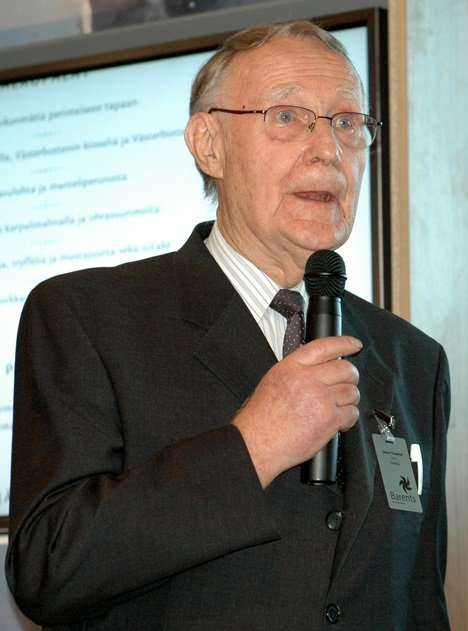
The general who divides his resources will invariably be defeated.Ingvar Kamprad 1926–2018 A Furniture Dealer's Testament (En möbelhandlares testamente), 1976 · Point 7, 'Concentration – important to our success' (first sentence); p. 14 of the 2018 Inter IKEA PDF · Overs. Inter IKEA Systems B.V. (IKEA's official English version) Foto: Sandra Baqirjazid / Ministry of Enterprise, Energy and Communications of Sweden, CC BY 2.0, via Wikimedia Commons (https://commons.wikimedia.org/wiki/File:Ingvar_Kamprad_Haparanda_June_2010.jpg) · CC BY 2.0
Fearlessness is like a muscle. I know from my own life that the more I exercise it the more natural it becomes to not let my fears run me.Arianna Huffington born 1950 On Becoming Fearless … in Love, Work, and Life (Boston/London: Little, Brown; paperback reprint), 2007 (first ed. 2006) · Reading Group Guide at the back of the 2007 Little, Brown paperback, 'A Conversation with Arianna Huffington', answer headed 'ARIANNA:' (unnumbered back-matter page; scan page n247) Foto: David Shankbone, CC BY 3.0, via Wikimedia Commons (https://commons.wikimedia.org/wiki/File:Arianna_Huffington_2012_Shankbone.JPG) · CC BY 3.0
Don't stop. Don't even think about stopping until you get there, and don't give much thought to where "there" is.Phil Knight born 1938 Shoe Dog: A Memoir by the Creator of Nike (New York: Scribner), 2016 · Opening section, 'Dawn' (page number not determined) Foto: Tom Matthyssens, CC BY-SA 4.0, via Wikimedia Commons (https://commons.wikimedia.org/wiki/File:Phil_Knight_with_Tom_Matthyssens_in_Universal_Studios_Orlando_1999_(cropped).jpg) · CC BY-SA 4.0
Big business, I think, is a combination of timing, hard work, and an ability to see beyond one's nose.Estée Lauder 1908–2004 Estée: A Success Story (New York: Random House), 1985 · Page not determined Foto: Bill Sauro, New York World-Telegram and the Sun staff photographer (Library of Congress, NYWT&S collection, cph.3c09674), Public domain, via Wikimedia Commons (https://commons.wikimedia.org/wiki/File:Estee_Lauder_NYWTS_(cropped).jpg) · Public domain
.jpg){kind=link}
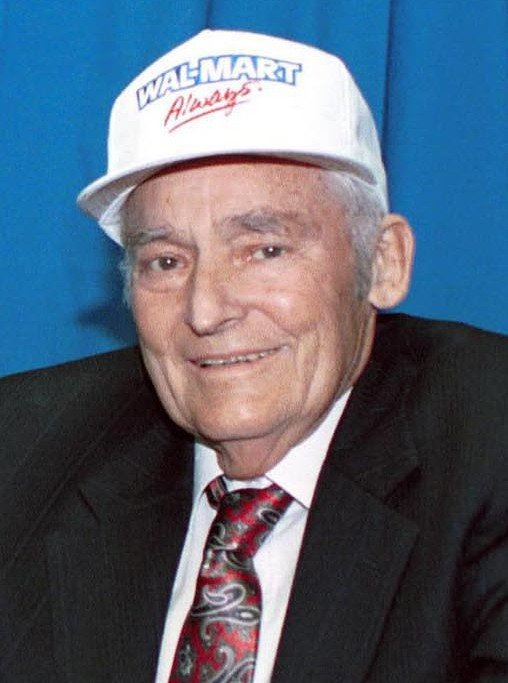
Swim upstream. Go the other way. Ignore the conventional wisdom.Sam Walton 1918–1992 Sam Walton: Made in America — My Story, with John Huey (New York: Doubleday), 1992 · Chapter 'Running a Successful Company: Ten Rules That Worked for Me', Rule 10, p. 249 Foto: George Bush Presidential Library and Museum (U.S. government photo), Public domain, via Wikimedia Commons (https://commons.wikimedia.org/wiki/File:Sam_Walton_(1992_2)_(cropped).jpg) · Public domain
_(cropped).jpg){kind=link}
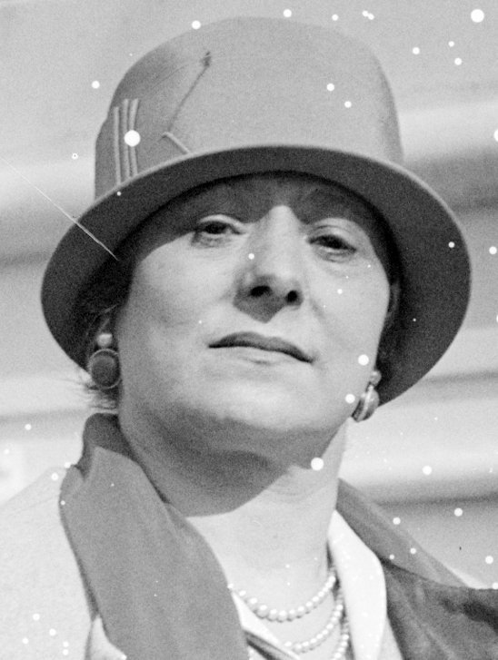
I believe in hard work. It keeps the wrinkles out of the mind and the spirit.Helena Rubinstein 1872–1965 My Life for Beauty (London: The Bodley Head; New York: Simon and Schuster, 1966), 1965 · Page not determined (same wording in both the 1965 London and 1966 New York editions) Foto: George Grantham Bain Collection, Library of Congress (ggbain.39153), Public domain, via Wikimedia Commons (https://commons.wikimedia.org/wiki/File:Helena_Rubinstein.jpg) · Public domain

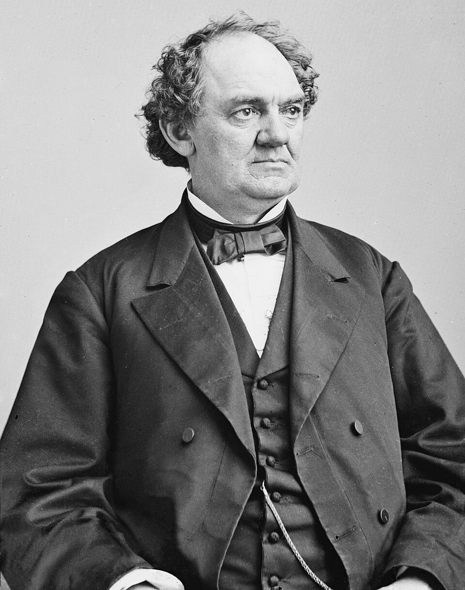
Do not scatter your powers. Engage in one kind of business only, and stick to it faithfully until you succeed, or until your experience shows that you should abandon it.P. T. Barnum 1810–1891 The Art of Money Getting, or Golden Rules for Making Money (lecture, published 1880), 1880 · Section 'Do Not Scatter Your Powers' (heading plus its first sentence) Foto: Mathew Brady studio (Brady-Handy Photograph Collection, Library of Congress), Public domain, via Wikimedia Commons (https://commons.wikimedia.org/wiki/File:P._T._Barnum_-_02176a_(cropped).jpg) · Public domain
.jpg){kind=link}

The trouble with every one of us is that we don't think enough. We don't get paid for working with our feet — we get paid for working with our heads.Thomas J. Watson 1874–1956 Impromptu talk at a sales and advertising meeting of the National Cash Register Company, Dayton, Ohio — the origin of the THINK slogan he later brought to IBM, 1911 (IBM's page says 1915, which cannot be right for an NCR meeting: Watson had left NCR and was running CTR from 1914) · IBM Heritage, 'The origins of THINK' Foto: Oscar White (National Portrait Gallery, Smithsonian Institution, NPG.93.388.38), CC0, via Wikimedia Commons (https://commons.wikimedia.org/wiki/File:Thomas_J._Watson_-_National_Portrait_Gallery.jpg) · CC0
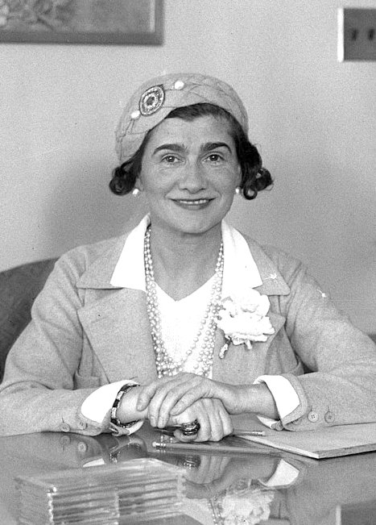
In order to be irreplaceable one must always be different.Coco Chanel 1883–1971 Marcel Haedrich, Coco Chanel secrète (Paris: Robert Laffont) — remarks the author recorded from Chanel, in the section 'She Said', 1971 · French edition p. 308; English translation (1972) p. 255 · Overs. Charles Lam Markmann Foto: Los Angeles Times (UCLA Library Special Collections, Los Angeles Times Photographic Archive), CC BY 4.0, via Wikimedia Commons (https://commons.wikimedia.org/wiki/File:Coco_Chanel_in_Los_Angeles,_1931_(cropped).jpg) · CC BY 4.0
The best lesson I learned was to just do it.Richard Branson born 1950 Screw It, Let's Do It: Lessons in Life (London: Virgin Books), 2006 · Introduction (unnumbered front matter, second page of the Introduction; scan page n9). Chapter 1 'Just Do It!' starts on p. 1 Foto: Chatham House (Flickr), CC BY 2.0, via Wikimedia Commons (https://commons.wikimedia.org/wiki/File:Richard_Branson_March_2015_(cropped).jpg) · CC BY 2.0
Sportsfolk
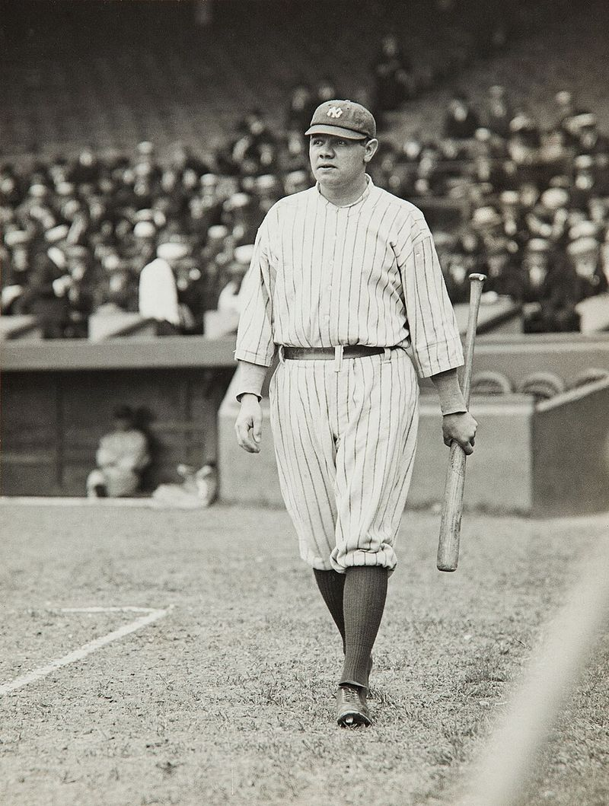
You just can't beat the person who never gives up.Babe Ruth 1895–1948 'Bat It Out!', article under Babe Ruth's byline, The Rotarian, vol. 57 no. 1, 1940 · July 1940, p. 14 Foto: Paul Thompson, Public domain, via Wikimedia Commons (https://commons.wikimedia.org/wiki/File:Babe_Ruth_by_Paul_Thompson,_1920.jpg) · Public domain


He who is not courageous enough to take risks will accomplish nothing in life.Muhammad Ali 1942–2016 Quoted by columnist Bernie Lincicome, Fort Lauderdale News, 1977 · 14 April 1977, p. 6D Foto: Ira Rosenberg, World Journal Tribune (Library of Congress, NYWT&S collection), Public domain, via Wikimedia Commons (https://commons.wikimedia.org/wiki/File:Muhammad_Ali_NYWTS.jpg) · Public domain


When you're playing a point, it is the most important thing in the world. But when it's behind you, it's behind you.Roger Federer born 1981 Commencement address, Dartmouth College, 2024 · Delivered 9 June 2024; Dartmouth's published text, second lesson ('It's only a point') Foto: Tatiana (Flickr, Moscow), CC BY-SA 2.0, via Wikimedia Commons (https://commons.wikimedia.org/wiki/File:Roger_Federer_2015_(cropped).jpg) · CC BY-SA 2.0

Talent has a broad definition. Most of the time, it's not about having a gift. It's about having grit.Roger Federer born 1981 Commencement address, Dartmouth College, 2024 · Delivered 9 June 2024; Dartmouth's published text, first lesson ('Effortless is a myth') Foto: Tatiana (Flickr, Moscow), CC BY-SA 2.0, via Wikimedia Commons (https://commons.wikimedia.org/wiki/File:Roger_Federer_2015_(cropped).jpg) · CC BY-SA 2.0

… those times when you don't feel like working and you're tired and you don't want to push yourself, but you do it anyway. That is actually the dream.Kobe Bryant 1978–2020 Speech at his jersey-retirement ceremony, Staples Center, Los Angeles; as reported by Ben Golliver, 'Idol Worship: Lakers Raise Kobe Bryant's Jerseys to Rafters in Raucous Ceremony', Sports Illustrated, 2017 · Speech delivered 18 December 2017 (halftime, Lakers v Warriors); SI article dated 19 December 2017 Foto: Keith Allison, CC BY-SA 2.0, via Wikimedia Commons (https://commons.wikimedia.org/wiki/File:Kobe_Bryant_2014.jpg) · CC BY-SA 2.0
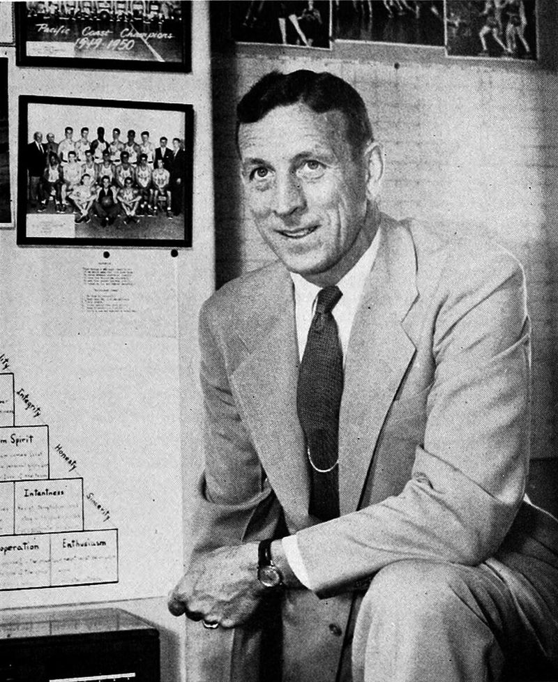
Success is peace of mind which is a direct result of self-satisfaction in knowing you made the effort to become the best that you are capable of becoming.John Wooden 1910–2010 'The difference between winning and succeeding', TED talk (TED2001), 2001 · Recorded February 2001; TED's official transcript, cue at 2:54 Foto: Associated Students, UCLA (Southern Campus 1960), Public domain, via Wikimedia Commons (https://commons.wikimedia.org/wiki/File:John_Wooden_-_Southern_Campus_1960.jpg) · Public domain

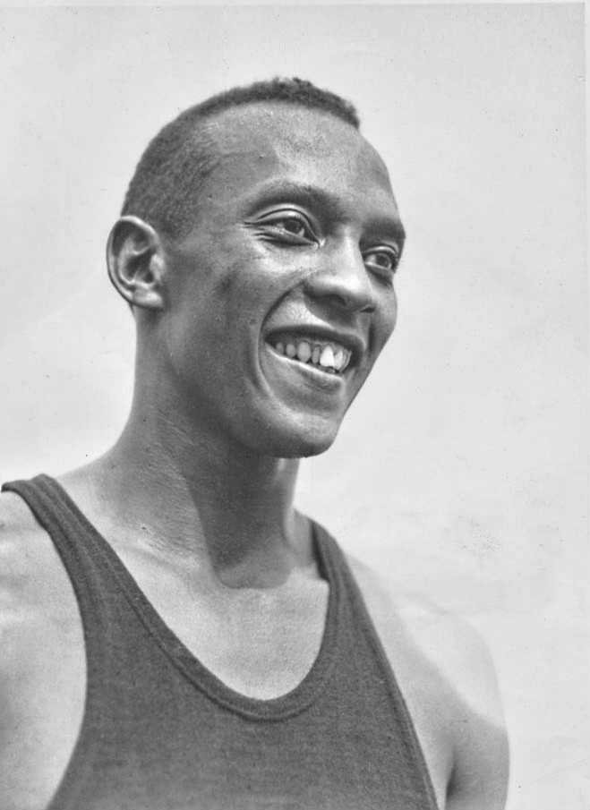
We all have dreams. But in order to make dreams into reality, it takes an awful lot of determination, dedication, self-discipline and effort.Jesse Owens 1913–1980 Quoted in Frank Litsky, 'Superstars' (Secaucus, NJ: Derbibooks); repeated in Litsky's obituary 'Jesse Owens Dies of Cancer at 66; Hero of the 1936 Berlin Olympics', The New York Times, 1975 · Book 1975 (page not determined); NYT obituary 1 April 1980 Foto: Acme News Photos, Public domain, via Wikimedia Commons (https://commons.wikimedia.org/wiki/File:Jesse_Owens_1936.jpg) · Public domain

Pressure is a privilege.Billie Jean King born 1943 Pressure Is a Privilege: Lessons I've Learned from Life and the Battle of the Sexes, with Christine Brennan (New York: LifeTime Media), 2008 · Book title; the phrase also occurs in the body text (page not determined) Foto: Gage Skidmore, CC BY-SA 2.0, via Wikimedia Commons (https://commons.wikimedia.org/wiki/File:Billie_Jean_King,_2016_(cropped).jpg) · CC BY-SA 2.0
I'm not the next Usain Bolt or Michael Phelps, I'm the first Simone Biles.Simone Biles born 1997 Remarks after winning the Olympic all-around title, Rio de Janeiro; reported by James Masters, 'Simone Biles wins all-around gymnastic gold in Rio', CNN, 2016 · CNN article published 11 August 2016 Foto: Fernando Frazão / Agência Brasil, CC BY 3.0 BR, via Wikimedia Commons (https://commons.wikimedia.org/wiki/File:Simone_Biles_na_Rio_2016_cropped.jpg) · CC BY 3.0 BR
I am the happiest man in the world to be the first human to run under two hours and I can tell people that no human is limited.Eliud Kipchoge born 1984 Remarks after the INEOS 1:59 Challenge, Vienna; Associated Press report 'Kipchoge first under 2 hours for marathon but no record', published by PBS NewsHour, 2019 · Run on 12 October 2019; AP/PBS article dated 12 October 2019 Foto: Desitlicheresguruweil, CC BY-SA 4.0, via Wikimedia Commons (https://commons.wikimedia.org/wiki/File:Eliud_Kipchoge_in_Berlin_(cropped).jpg) · CC BY-SA 4.0

Limits, like fears, are often just an illusion.Michael Jordan born 1963 Enshrinement speech, Naismith Memorial Basketball Hall of Fame, Springfield, Massachusetts, 2009 · Delivered 11 September 2009; the closing lines ('Never say never, because limits, like fears…'); official video uploaded by the Hall of Fame (YouTube @OfficialHoophall, id XLzBMGXfK4c) Foto: D. Myles Cullen (U.S. Department of Defense), Public domain, via Wikimedia Commons (https://commons.wikimedia.org/wiki/File:Michael_Jordan_in_2014.jpg) · Public domain

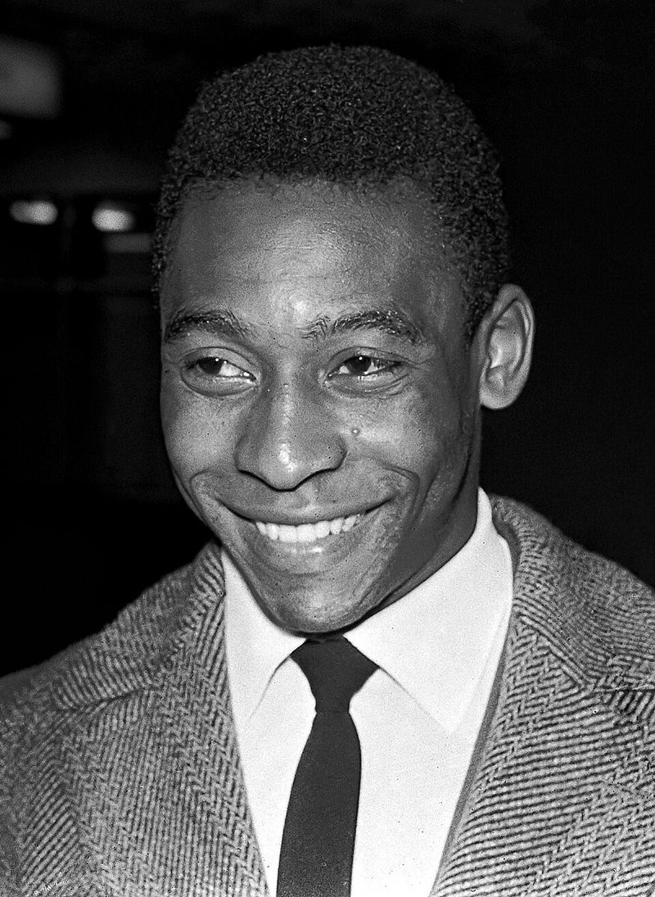
Success is no accident. It is hard work, perseverance, learning, studying, sacrifice, and, most of all, love of what you are doing or learning to do.Pelé 1940–2022 Learning Soccer with Pelé (Philadelphia: J. B. Lippincott), 1978 · Page not determined Foto: Hugo van Gelderen / Anefo, Nationaal Archief, CC BY-SA 3.0 NL, via Wikimedia Commons (https://commons.wikimedia.org/wiki/File:Pel%C3%A9_Schiphol_1963.jpg) · CC BY-SA 3.0 NL
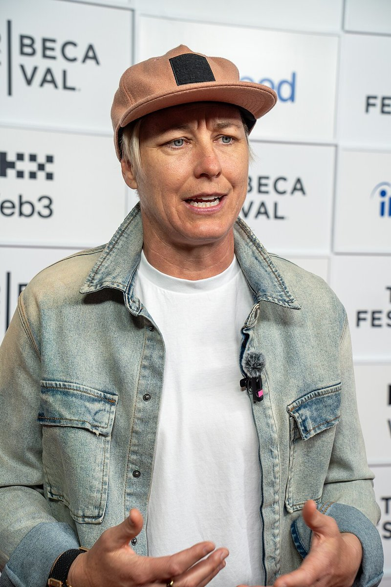
Failure is not something to be ashamed of, it's something to be powered by. Failure is the highest octane fuel your life can run on.Abby Wambach born 1980 Commencement address, Barnard College, New York; full text published as "'Make Failure Your Fuel.' Read Soccer Star Abby Wambach's Barnard Commencement Address", TIME, 2018 · Delivered 16 May 2018; TIME text published 17 May 2018 (US time), under 'Rule No. 1' Foto: Bryan Berlin, CC BY-SA 4.0, via Wikimedia Commons (https://commons.wikimedia.org/wiki/File:Abby_Wambach_Come_See_Me_In_The_Good_Light-31.jpg) · CC BY-SA 4.0
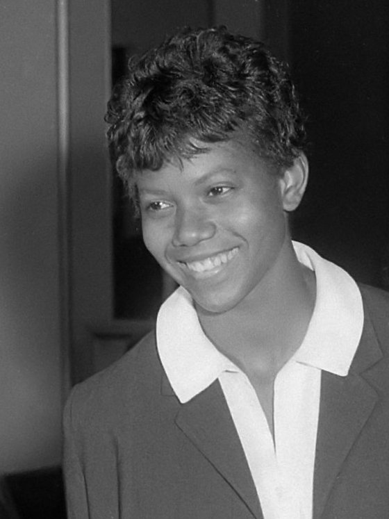
If you can pick up after a crushing defeat, and go on to win again, you are going to be a champion someday.Wilma Rudolph 1940–1994 Wilma (New York: Signet / New American Library), 1977 · Pp. 65–66, chapter 'Introduction to Competition' (page numbers as cited by Quote Investigator; the scan's OCR also shows the page break inside the sentence) Foto: Henk Lindeboom / Anefo, Nationaal Archief, CC BY-SA 3.0 NL, via Wikimedia Commons (https://commons.wikimedia.org/wiki/File:Wilma_Rudolph_(1960).jpg) · CC BY-SA 3.0 NL
Many people say I'm the best women's soccer player in the world. I don't think so. And because of that, someday I just might be.Mia Hamm born 1972 Go for the Goal: A Champion's Guide to Winning in Soccer and Life, with Aaron Heifetz (New York: HarperCollins), 1999 · Page not determined Foto: Rob Poetsch, cropped by Blackcat, CC BY-SA 2.0, via Wikimedia Commons (https://commons.wikimedia.org/wiki/File:Mia_Hamm_2010_cropped.jpg) · CC BY-SA 2.0

If you put a limit on anything, you put a limit on how far you can go.Michael Phelps born 1985 No Limits: The Will to Succeed, with Alan Abrahamson (New York: Free Press), 2008 · Page not determined (first-person passage about believing he could swim 4:03) Foto: Agência Brasil Fotografias, CC BY 2.0, via Wikimedia Commons (https://commons.wikimedia.org/wiki/File:Michael_Phelps_Rio_Olympics_2016.jpg) · CC BY 2.0
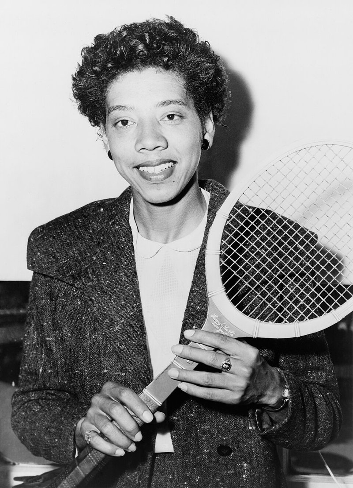
I always wanted to be somebody.Althea Gibson 1927–2003 I Always Wanted to Be Somebody, edited by Ed Fitzgerald (New York: Harper & Brothers), 1958 · Book title, and the opening sentence of chapter 1 ('We Weren't Bad, Just Mischievous') Foto: Fred Palumbo, New York World-Telegram & Sun (Library of Congress), Public domain, via Wikimedia Commons (https://commons.wikimedia.org/wiki/File:Althea_Gibson_in_1956_by_Fred_Palumbo_(NYWTS).jpg) · Public domain
.jpg){kind=link}
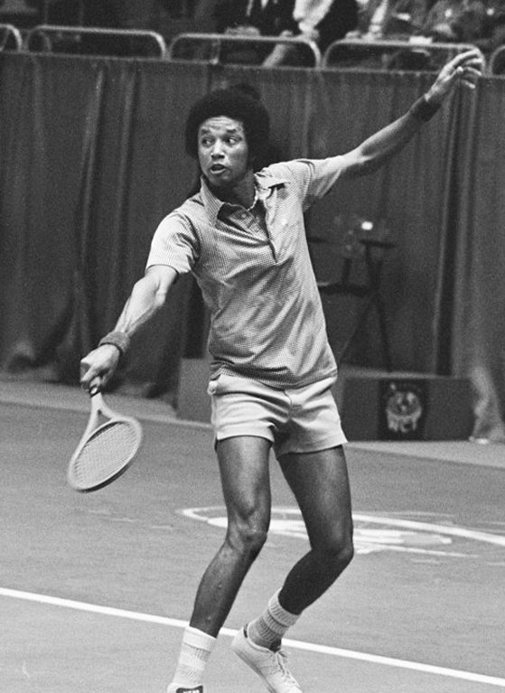
You are never really playing an opponent. You are playing yourself, your own highest standards, and when you reach your limits, that is the real joy.Arthur Ashe 1943–1993 Arthur Ashe: Portrait in Motion, with Frank Deford (Boston: Houghton Mifflin), 1975 · Page not determined Foto: Rob Bogaerts / Anefo, Nationaal Archief, CC BY-SA 3.0 NL, via Wikimedia Commons (https://commons.wikimedia.org/wiki/File:Arthur_Ashe_(cropped).jpg) · CC BY-SA 3.0 NL
Champions adjust.Billie Jean King born 1943 Pressure Is a Privilege: Lessons I've Learned from Life and the Battle of the Sexes, with Christine Brennan (New York: LifeTime Media), 2008 · Title of one of the book's chapters; repeated in her own voice in the text (page not determined) Foto: Jonathan Exley / Billie Jean King Enterprises, CC BY-SA 3.0, via Wikimedia Commons (https://commons.wikimedia.org/wiki/File:BJK_headshot_2011_5x7_300dpi.jpg) · CC BY-SA 3.0

I doubt about myself. I think the doubts are good in life.Rafael Nadal born 1986 Interview with Sean Gregory, "Rafael Nadal: 'I Doubt About Myself'", TIME, 2014 · 22 May 2014 Foto: Tourism Victoria, CC BY 2.0, via Wikimedia Commons (https://commons.wikimedia.org/wiki/File:Rafael_Nadal_January_2015.jpg) · CC BY 2.0
Ledere og verdensforandrere

No longer talk at all about the kind of man that a good man ought to be, but be such.Marcus Aurelius 121–180 CE Meditations, c. 170–180 CE · Book X, §16 · Overs. George Long Foto: Daniel Martin, CC BY-SA 4.0, via Wikimedia Commons (https://commons.wikimedia.org/wiki/File:MSR-ra-61-b-1-DM.jpg) · CC BY-SA 4.0

In the morning when thou risest unwillingly, let this thought be present,—I am rising to the work of a human being.Marcus Aurelius 121–180 CE Meditations, c. 170–180 CE · Book V, §1 · Overs. George Long Foto: Daniel Martin, CC BY-SA 4.0, via Wikimedia Commons (https://commons.wikimedia.org/wiki/File:MSR-ra-61-b-1-DM.jpg) · CC BY-SA 4.0

The credit belongs to the man who is actually in the arena, whose face is marred by dust and sweat and blood; who strives valiantly; who errs, who comes short again and again.Theodore Roosevelt 1858–1919 'Citizenship in a Republic', speech at the Sorbonne, Paris (23 April 1910), 1910 · 'The Man in the Arena' passage Foto: Pach Brothers, 1904 (restored by Adam Cuerden), public domain, via Wikimedia Commons (https://commons.wikimedia.org/wiki/File:Theodore_Roosevelt_by_the_Pach_Bros_(4x5_cropped)_(2).jpg) · Public domain

Never give in, never give in, never, never, never—in nothing, great or small, large or petty—never give in except to convictions of honour and good sense.Winston Churchill 1874–1965 Speech at Harrow School, 1941 (29 October) · International Churchill Society transcript Foto: British Government / Imperial War Museum, public domain, via Wikimedia Commons (https://commons.wikimedia.org/wiki/File:Churchill_portrait_NYP_45063.jpg) · Public domain (PD-UKGov)

Always bear in mind that your own resolution to succeed, is more important than any other one thing.Abraham Lincoln 1809–1865 Letter to Isham Reavis, Springfield, 1855 (5 November) · Collected Works of Abraham Lincoln, ed. Roy P. Basler, vol. 2, p. 327 (page from memory — verify) Foto: Alexander Gardner, Public domain, via Wikimedia Commons (https://commons.wikimedia.org/wiki/File:Abraham_Lincoln_O-77_matte_collodion_print.jpg) · Public domain

If there is no struggle there is no progress.Frederick Douglass 1818–1895 'West India Emancipation' (The Significance of Emancipation in the West Indies), address at Canandaigua, New York, 1857 (3 August) · Frederick Douglass Papers Project digital edition, item 10509 Foto: George Kendall Warren, Public domain, via Wikimedia Commons (https://commons.wikimedia.org/wiki/File:Frederick_Douglass_(circa_1879)_(cropped).jpg) · Public domain

Strength does not come from physical capacity. It comes from an indomitable will.Mahatma Gandhi 1869–1948 'The Doctrine of the Sword', Young India, 1920 (11 August) · Young India, 11 Aug 1920; Collected Works of Mahatma Gandhi vol. 18 (CWMG volume number not confirmed) Foto: Elliott & Fry, Public domain, via Wikimedia Commons (https://commons.wikimedia.org/wiki/File:Mahatma-Gandhi,_studio,_1931.jpg) · Public domain

You must do the thing you think you cannot do.Eleanor Roosevelt 1884–1962 You Learn by Living, 1960 · Chapter 'Fear—the Great Enemy' (p. 29–30 in the 1960 Harper edition — page not seen) Foto: FDR Presidential Library & Museum, CC BY 2.0, via Wikimedia Commons (https://commons.wikimedia.org/wiki/File:Eleanor_Roosevelt_at_the_United_Nations,_circa_1946-1947_(3x4_cropped).jpg) · CC BY 2.0
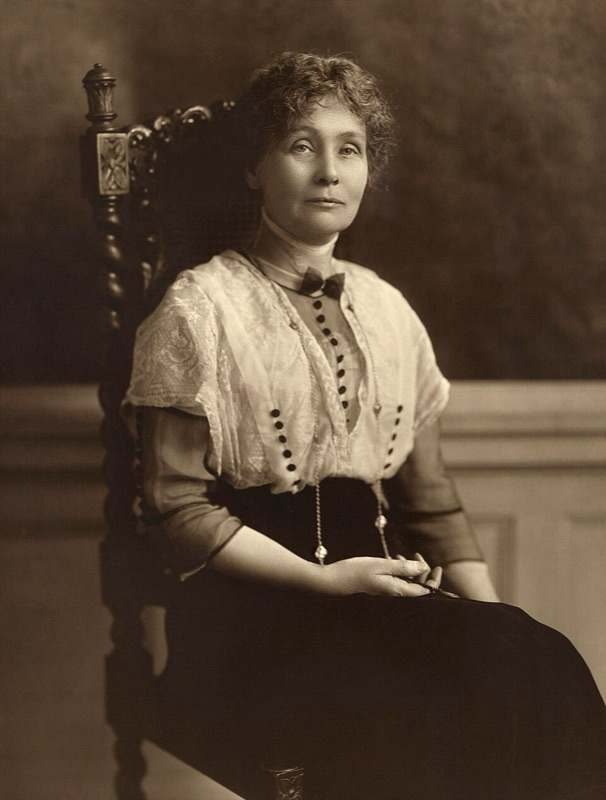
Deeds, not words, was to be our permanent motto.Emmeline Pankhurst 1858–1928 My Own Story, 1914 · Book I, ch. III (founding of the WSPU, 1903) Foto: Matzene, Chicago, 1913 (restored by Adam Cuerden), public domain, via Wikimedia Commons (https://commons.wikimedia.org/wiki/File:Emmeline_Pankhurst,_seated_(1913).jpg) · Public domain
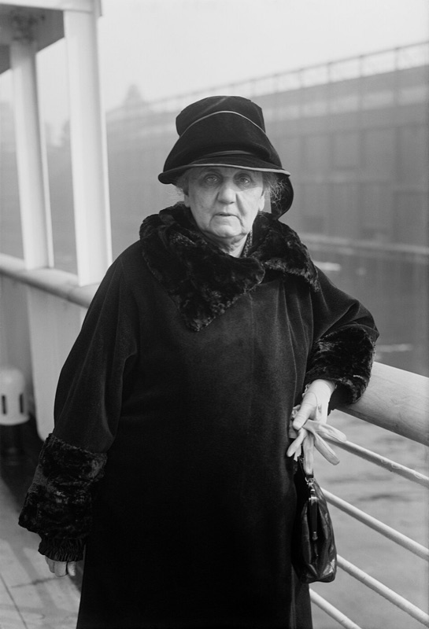
Action is the only medium man has for receiving and appropriating truth.Jane Addams 1860–1935 Twenty Years at Hull-House, 1910 · Chapter VI, 'Subjective Necessity for Social Settlements' Foto: Bain News Service (restored by Adam Cuerden), public domain, via Wikimedia Commons (https://commons.wikimedia.org/wiki/File:Jane_Addams_-_Bain_News_Service.jpg) · Public domain
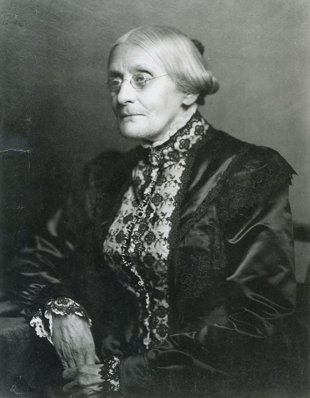
Failure is impossible.Susan B. Anthony 1820–1906 Remarks at her 86th birthday celebration, Washington, D.C. (National American Woman Suffrage Association), 1906 (15 February) · History of Woman Suffrage, vol. 5, ch. 6 (quoting Harper, Life and Work of Susan B. Anthony, vol. 3) Foto: Unknown author, Public domain, via Wikimedia Commons (https://commons.wikimedia.org/wiki/File:SB_Anthony_from_RoRaWW.jpg) · Public domain

The Habits of a vigorous mind are formed in contending with difficulties. … Great necessities call out great virtues.Abigail Adams 1744–1818 Letter to John Quincy Adams, 19 January 1780, 1780 · Adams Family Correspondence, vol. 3 (ADMS-04-03-02-0207) Foto: Gilbert Stuart, Public domain, via Wikimedia Commons (https://commons.wikimedia.org/wiki/File:Abigail_Adams_by_Gilbert_Stuart.jpg) · Public domain
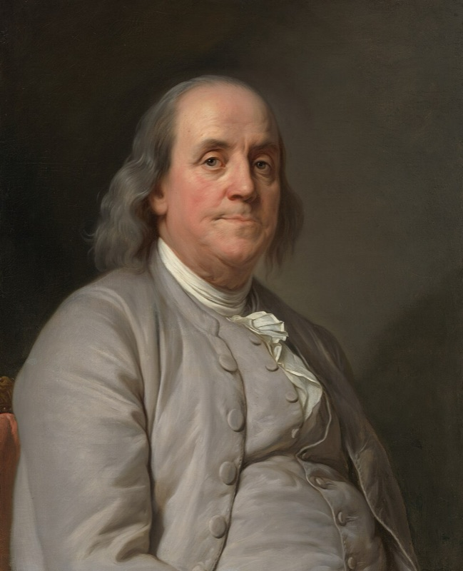
Resolution. Resolve to perform what you ought; perform without fail what you resolve.Benjamin Franklin 1706–1790 The Autobiography of Benjamin Franklin, written 1784 (publ. 1791/1868) · Part II, list of thirteen virtues, no. 4 Foto: Joseph-Siffred Duplessis, Public domain, via Wikimedia Commons (https://commons.wikimedia.org/wiki/File:Joseph_Siffrein_Duplessis_-_Benjamin_Franklin_-_Google_Art_Project.jpg) · Public domain

Dost thou love life? then do not squander time, for that is the stuff life is made of.Benjamin Franklin 1706–1790 The Way to Wealth (preface to Poor Richard Improved), 1758 · Father Abraham's speech, quoting 'Poor Richard' Foto: Joseph-Siffred Duplessis, Public domain, via Wikimedia Commons (https://commons.wikimedia.org/wiki/File:Joseph_Siffrein_Duplessis_-_Benjamin_Franklin_-_Google_Art_Project.jpg) · Public domain

Determine never to be idle. No person will have occasion to complain of the want of time, who never loses any. It is wonderful how much may be done, if we are always doing.Thomas Jefferson 1743–1826 Letter to Martha Jefferson, Marseilles, 5 May 1787, 1787 · Papers of Thomas Jefferson, vol. 11 (Founders Online 01-11-02-0327) Foto: Rembrandt Peale, Public domain, via Wikimedia Commons (https://commons.wikimedia.org/wiki/File:Official_Presidential_portrait_of_Thomas_Jefferson_(by_Rembrandt_Peale,_1800).jpg) · Public domain
I came, I saw, I conquered.Julius Caesar 100–44 BCE Inscription displayed at his Pontic triumph (46 BCE), reported by Suetonius, 47–46 BCE · Suetonius, Divus Julius 37.2 · Overs. J. C. Rolfe Foto: Ángel M. Felicísimo, CC BY 2.0, via Wikimedia Commons (https://commons.wikimedia.org/wiki/File:Retrato_de_Julio_C%C3%A9sar_(26724093101)_(cropped).jpg) · CC BY 2.0
That is done quickly enough which is done well enough.Augustus 63 BCE–14 CE Favourite saying, reported by Suetonius, c. 121 CE (Suetonius) · Suetonius, Divus Augustus 25.4 · Overs. J. C. Rolfe Foto: Justin Benttinen, CC BY-SA 4.0, via Wikimedia Commons (https://commons.wikimedia.org/wiki/File:Augustus_of_Prima_Porta.jpg) · CC BY-SA 4.0

I have learned that success is to be measured not so much by the position that one has reached in life as by the obstacles which he has overcome while trying to succeed.Booker T. Washington 1856–1915 Up from Slavery: An Autobiography, 1901 · Chapter II, 'Boyhood Days' Foto: Harris & Ewing, Public domain, via Wikimedia Commons (https://commons.wikimedia.org/wiki/File:Booker_T_Washington_retouched_flattened-crop.jpg) · Public domain
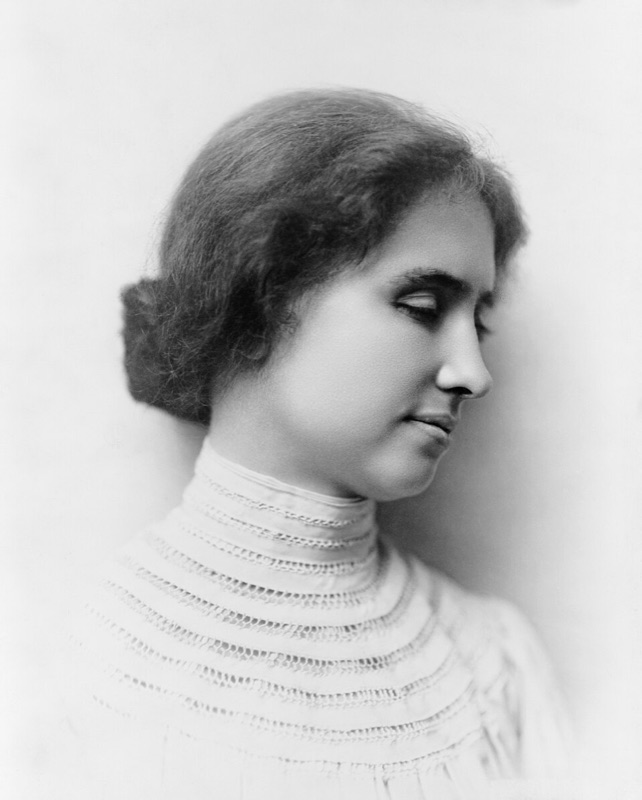
Although the world is full of suffering, it is full also of the overcoming of it.Helen Keller 1880–1968 Optimism: An Essay, 1903 · Part I, 'Optimism Within' Foto: Unknown author, Public domain, via Wikimedia Commons (https://commons.wikimedia.org/wiki/File:Helen_Keller_(circa_1904).jpg) · Public domain
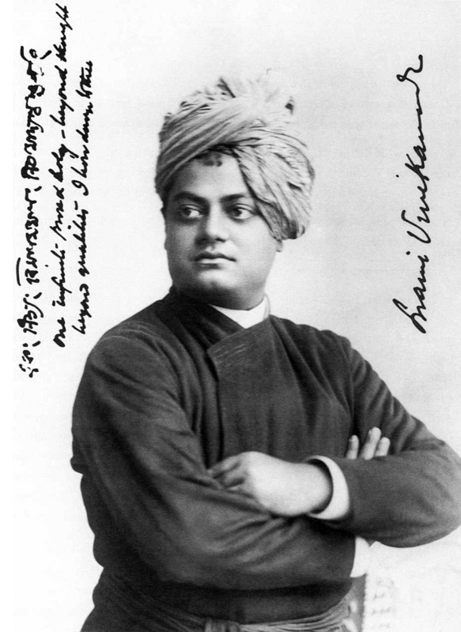
Arise, awake, and stop not till the goal is reached.Swami Vivekananda 1863–1902 Lectures from Colombo to Almora: "The Mission of the Vedanta" (Kumbakonam, 1897), Complete Works vol. 3, 1897 · Complete Works, vol. 3 (rendering Katha Upanishad 1.3.14) Foto: Unknown photographer, Chicago, 1893, public domain, via Wikimedia Commons (https://commons.wikimedia.org/wiki/File:Swami_Vivekananda-1893-09-signed.jpg) · Public domain
Forskere, opfindere, forfattere og filosoffer

Nothing great … is produced suddenly, since not even the grape or the fig is.Epictetus c. 50–c. 135 CE Discourses (recorded by Arrian), c. 108 CE · Book I, ch. 15 ('What philosophy promises') · Overs. George Long Foto: William Sonmans / Michael Burghers, Public domain, via Wikimedia Commons (https://commons.wikimedia.org/wiki/File:Epicteti_Enchiridion_Latinis_versibus_adumbratum_(Oxford_1715)_frontispiece_(cropped).jpg) · Public domain

We become just by doing just acts, temperate by doing temperate acts, brave by doing brave acts.Aristotle 384–322 BCE Nicomachean Ethics, c. 340 BCE · Book II, ch. 1 (1103a34–b2) · Overs. W. D. Ross Foto: After Lysippos, Public domain, via Wikimedia Commons (https://commons.wikimedia.org/wiki/File:Aristotle_Altemps_Inv8575.jpg) · Public domain
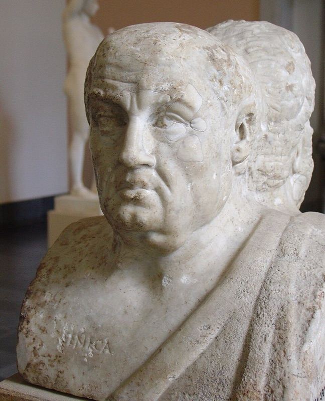
It is not that we have a short space of time, but that we waste much of it.Seneca c. 4 BCE–65 CE On the Shortness of Life (De Brevitate Vitae), c. 49 CE · Chapter 1, §3 · Overs. John W. Basore Foto: Calidius, CC BY-SA 3.0, via Wikimedia Commons (https://commons.wikimedia.org/wiki/File:Duble_herma_of_Socrates_and_Seneca_Antikensammlung_Berlin_07.jpg) · CC BY-SA 3.0

Hold every hour in your grasp. Lay hold of to-day's task, and you will not need to depend so much upon to-morrow's.Seneca c. 4 BCE–65 CE Moral Letters to Lucilius, c. 65 CE · Letter 1 ('On saving time'), §2 · Overs. Richard M. Gummere Foto: Calidius, CC BY-SA 3.0, via Wikimedia Commons (https://commons.wikimedia.org/wiki/File:Duble_herma_of_Socrates_and_Seneca_Antikensammlung_Berlin_07.jpg) · CC BY-SA 3.0
He who overcomes others is strong; he who overcomes himself is mighty.Laozi (traditional attribution) trad. 6th century BCE Tao Te Ching (道德經), c. 4th century BCE (compiled) · Chapter 33, §1 · Overs. James Legge Foto: Zhang Lu, Public domain, via Wikimedia Commons (https://commons.wikimedia.org/wiki/File:Zhang_Lu-Laozi_Riding_an_Ox_(cropped).jpg) · Public domain
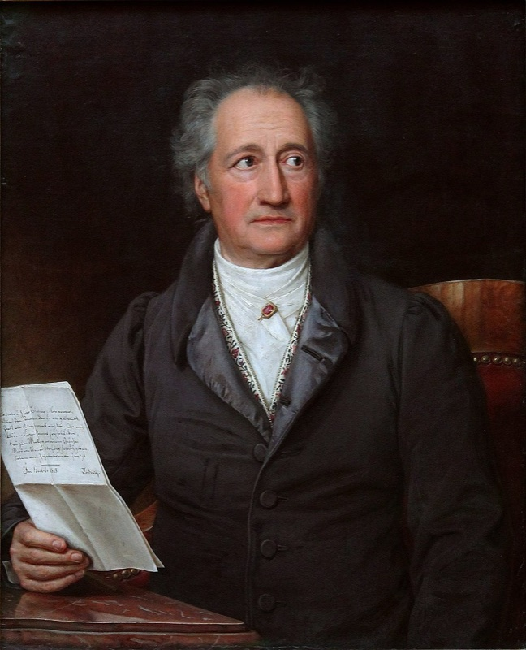
It is not enough to know, we must also apply; it is not enough to will, we must also do.Johann Wolfgang von Goethe 1749–1832 Maxims and Reflections (from Wilhelm Meisters Wanderjahre), 1829 · Saunders no. 324 (numbering adjacent to the text in Gutenberg #33670 — verify) · Overs. T. Bailey Saunders Foto: Joseph Karl Stieler, Public domain, via Wikimedia Commons (https://commons.wikimedia.org/wiki/File:Goethe_(Stieler_1828).jpg) · Public domain
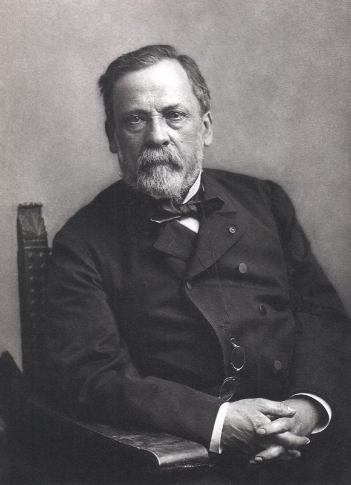
In the fields of observation, chance only favours the mind which is prepared.Louis Pasteur 1822–1895 Inaugural lecture, Faculty of Sciences, Lille, 1854 (7 December) · Quoted in Vallery-Radot, The Life of Pasteur, ch. IV (1855–1859) · Overs. Mrs. R. L. Devonshire Foto: Paul Nadar, Public domain, via Wikimedia Commons (https://commons.wikimedia.org/wiki/File:Louis_Pasteur,_foto_av_Paul_Nadar,_Crisco_edit.jpg) · Public domain
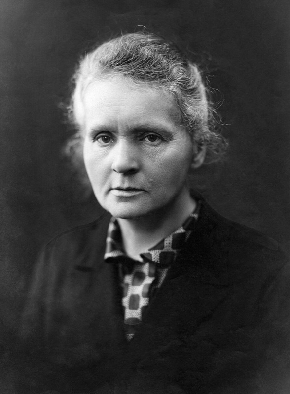
I was taught that the way of progress is neither swift nor easy.Marie Curie 1867–1934 Autobiographical Notes, in Pierre Curie, 1923 · Autobiographical Notes, ch. I · Overs. Charlotte Kellogg and Vernon Kellogg Foto: Henri Manuel, Public domain, via Wikimedia Commons (https://commons.wikimedia.org/wiki/File:Marie_Curie_c._1920s.jpg) · Public domain

Genius is one per cent inspiration, ninety-nine per cent perspiration.Thomas Edison 1847–1931 M. A. Rosanoff, "Edison in His Laboratory", Harper's Magazine vol. 165 (Sept. 1932), p. 406; earlier in Dyer & Martin, Edison: His Life and Inventions (1910), vol. 2, p. 607, 1932 · Quote Investigator, 'Genius is one percent inspiration…' (14 Dec 2012) Foto: Louis Bachrach, Bachrach Studios, restored by Michel Vuijlsteke, Public domain, via Wikimedia Commons (https://commons.wikimedia.org/wiki/File:Thomas_Edison2.jpg) · Public domain
Just as iron rusts unless it is used, and water putrifies or, in cold, turns to ice, so our intellect spoils unless it is kept in use.Leonardo da Vinci 1452–1519 Notebooks (Codex Atlanticus), c. 1490s–1510s · Richter no. 1177 (within the 'Philosophical Maxims / Morals' section) · Overs. Jean Paul Richter Foto: Attributed to Francesco Melzi, Public domain, via Wikimedia Commons (https://commons.wikimedia.org/wiki/File:Francesco_Melzi_-_Portrait_of_Leonardo_(colour_correction).png) · Public domain

A man who dares to waste one hour of time has not discovered the value of life.Charles Darwin 1809–1882 Letter to his sister Susan Darwin, from HMS Beagle (4 Aug 1836), 1836 · Printed in Francis Darwin (ed.), The Life and Letters of Charles Darwin, vol. 1 (1887), ch. VI 'The Voyage' Foto: Charles_Darwin_seated.jpg: Henry Maull (1829–1914) and John Fox (1832–1907) (Maull & Fox) [3] derivative work: Beao, Public domain, via Wikimedia Commons (https://commons.wikimedia.org/wiki/File:Charles_Darwin_seated_crop.jpg) · Public domain

Seize the very first possible opportunity to act on every resolution you make.William James 1842–1910 The Principles of Psychology, vol. 1, 1890 · Chapter IV, 'Habit' (third maxim) Foto: Notman Studios (photographer), Public domain, via Wikimedia Commons (https://commons.wikimedia.org/wiki/File:William_James_b1842c.jpg) · Public domain
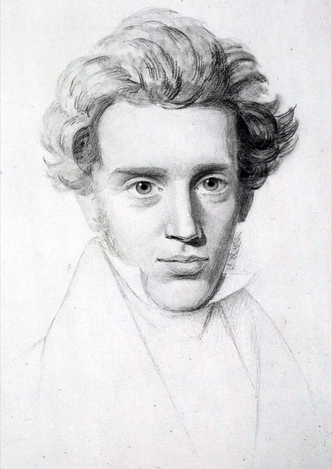
Purity of heart is to will one thing.Søren Kierkegaard 1813–1855 Opbyggelige Taler i forskjellig Aand (Upbuilding Discourses in Various Spirits), Part One, 1847 · Title and thesis of the first part ('En Leiligheds-Tale') · Overs. Douglas V. Steere Foto: Niels Christian Kierkegaard, c. 1840 (Royal Danish Library), public domain, via Wikimedia Commons (https://commons.wikimedia.org/wiki/File:S%C3%B8ren_Kierkegaard_(1813-1855)_-_(cropped).jpg) · Public domain
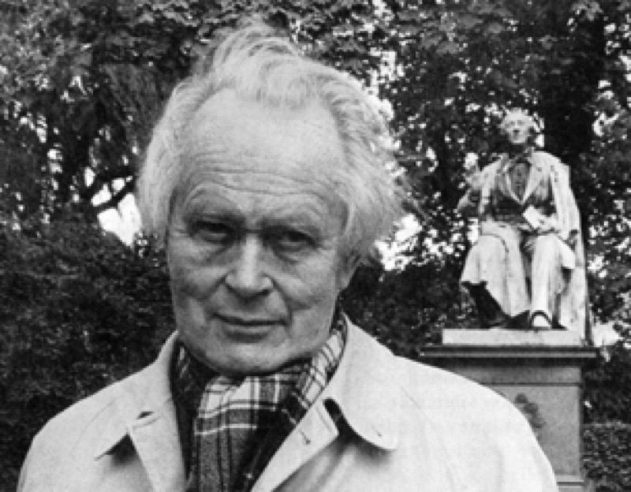
Problems worthy / of attack / prove their worth / by hitting back.Piet Hein 1905–1996 'Problems', in Grooks, 1966 · Grooks (MIT Press, 1966), p. [10] Foto: André Savik, CC BY 3.0, via Wikimedia Commons (https://commons.wikimedia.org/wiki/File:Piet_Hein_and_H.C._Andersen_(cropped).jpg) · CC BY 3.0
All the misfortunes of men arise from one thing only, that they are unable to stay quietly in their own chamber.Blaise Pascal 1623–1662 Pensées, 1670 (posthumous) · 'Diversion' (Brunschvicg 139 / Lafuma 136) · Overs. C. Kegan Paul Foto: unknown; a copy of the painting of François II Quesnel, which was made for Gérard Edelinck en 1691[réf. nécessaire]., Public domain, via Wikimedia Commons (https://commons.wikimedia.org/wiki/File:Blaise_Pascal_Versailles.JPG) · Public domain
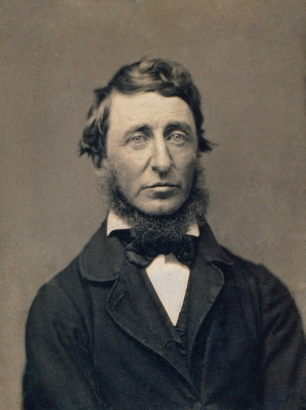
Our life is frittered away by detail. … Simplicity, simplicity, simplicity!Henry David Thoreau 1817–1862 Walden; or, Life in the Woods, 1854 · Chapter 2, 'Where I Lived, and What I Lived For' Foto: Benjamin D. Maxham active 1848 - 1858, Public domain, via Wikimedia Commons (https://commons.wikimedia.org/wiki/File:Benjamin_D._Maxham_-_Henry_David_Thoreau_-_Restored.jpg) · Public domain
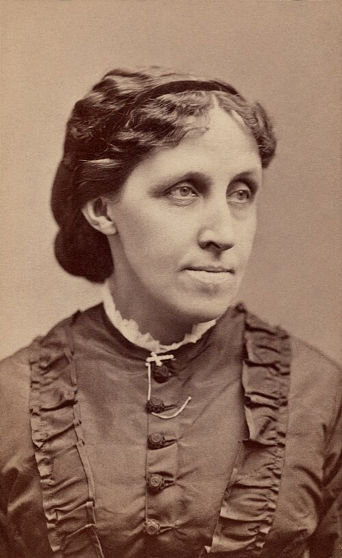
I'm not afraid of storms, for I'm learning how to sail my ship.Louisa May Alcott 1832–1888 Little Women (Part Second, 1869), 1868–69 · Chapter 44 ('My Lord and Lady'), spoken by Amy Foto: Warren's Portraits, Boston, c. 1870 (restored by Adam Cuerden), public domain, via Wikimedia Commons (https://commons.wikimedia.org/wiki/File:Louisa_May_Alcott,_c._1870_-_Warren%27s_Portraits,_Boston.jpg) · Public domain
Patience, Firmness, and Perseverance were my only weapons; and these I resolved to use to the utmost.Anne Brontë 1820–1849 Agnes Grey, 1847 · Chapter III, 'A Few More Lessons' Foto: Charlotte Brontë, Public domain, via Wikimedia Commons (https://commons.wikimedia.org/wiki/File:AnneBronte.jpg) · Public domain
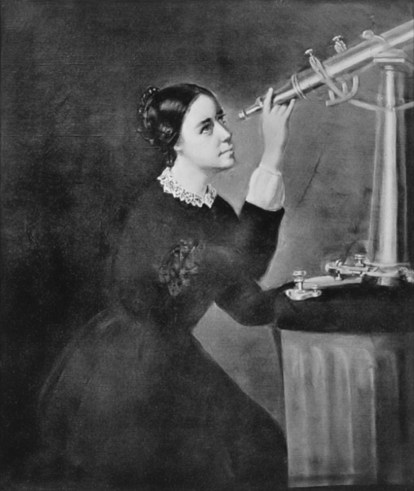
You must make up your mind to steady and earnest work. You must be content to get on slowly if you only get on thoroughly.Maria Mitchell 1818–1889 Address to her students at Vassar College, recorded in Phebe Mitchell Kendall (ed.), Maria Mitchell: Life, Letters, and Journals, 1866 (publ. 1896) · Section headed '1866. To her students' Foto: H. Dassell, Public domain, via Wikimedia Commons (https://commons.wikimedia.org/wiki/File:Maria_Mitchell.jpg) · Public domain
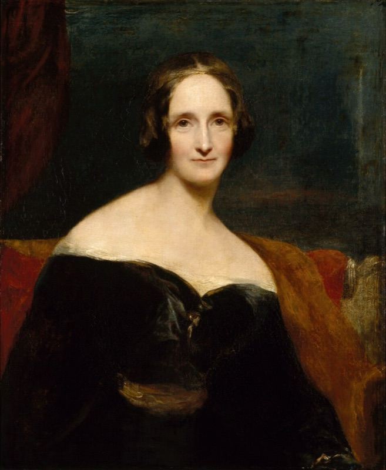
Nothing contributes so much to tranquillise the mind as a steady purpose—a point on which the soul may fix its intellectual eye.Mary Shelley 1797–1851 Frankenstein; or, The Modern Prometheus, 1818 · Letter 1 (Walton to Mrs. Saville) Foto: Richard Rothwell, Public domain, via Wikimedia Commons (https://commons.wikimedia.org/wiki/File:Mary_Wollstonecraft_Shelley_Rothwell.tif) · Public domain
Eventyrere og opdagelsesrejsende

Victory awaits him who has everything in order—luck, people call it. Defeat is certain for him who has neglected to take the necessary precautions in time; this is called bad luck.Roald Amundsen 1872–1928 Sydpolen: Den norske sydpolsfærd med Fram 1910–1912 (The South Pole), 1912 · Norwegian: Bind 1, p. 506 (Kristiania: Jacob Dybwad, 1912); English: Chater tr., Vol. I, Chapter IX 'The End of the Winter' · Overs. A. G. Chater Foto: Lomen Bros., Nome, Alaska (Library of Congress, cph.3b17878), Public domain, via Wikimedia Commons (https://commons.wikimedia.org/wiki/File:Roald_Amundsen_cph.3b17878.jpg) · Public domain

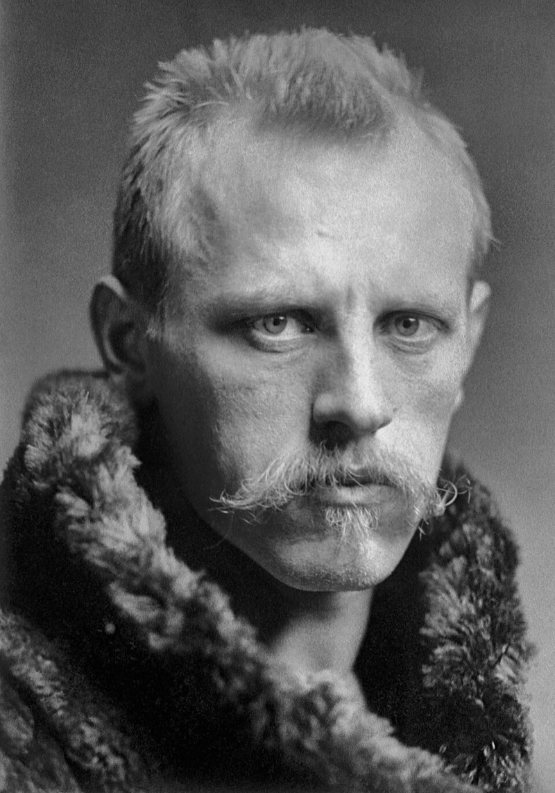
I have always thought that the much-praised “line of retreat” is a snare for people who wish to reach their goal.Fridtjof Nansen 1861–1930 Adventure (rectorial address, University of St Andrews, 3 November 1926), in Adventure, and Other Papers (London: Hogarth Press / L. & Virginia Woolf), 1927 · 'Adventure', p. 27 Foto: Henry Van der Weyde (via Library of Congress), Public domain, via Wikimedia Commons (https://commons.wikimedia.org/wiki/File:Fridtjof_Nansen_LOC_03377u-3.jpg) · Public domain

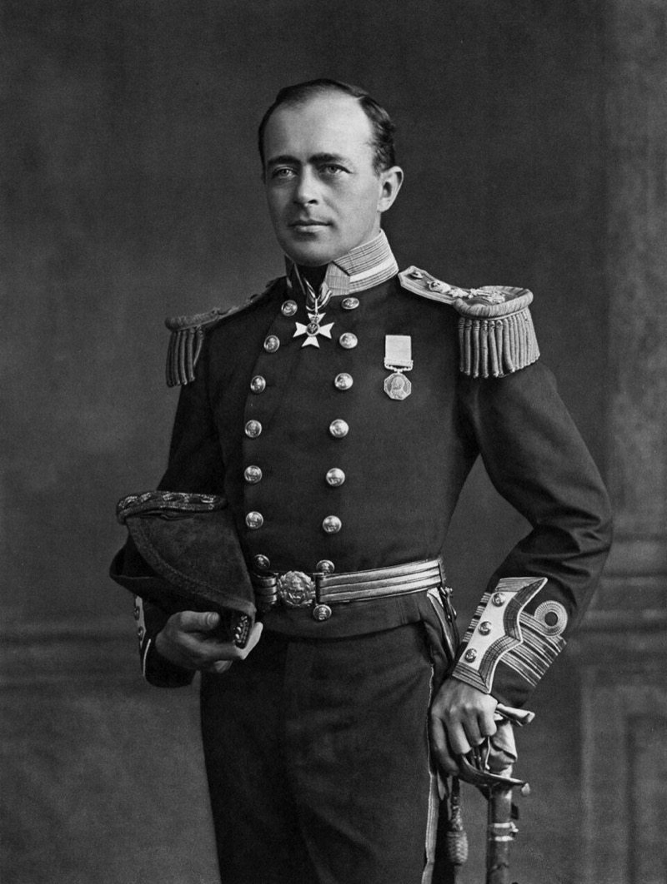
We took risks, we knew we took them; things have come out against us, and therefore we have no cause for complaint, but bow to the will of Providence, determined still to do our best to the last.Robert Falcon Scott 1868–1912 Scott's Last Expedition, Vol. I: Being the Journals of Captain R. F. Scott (arranged by Leonard Huxley; London: Smith, Elder & Co.), 1913 · 'Message to the Public', written in the tent, March 1912 Foto: Henry Maull and John Fox (Maull & Fox); frontispiece of The Voyage of the Discovery, 1905, Public domain, via Wikimedia Commons (https://commons.wikimedia.org/wiki/File:Scott_of_the_Antarctic_(bw)_(cropped).jpg) · Public domain
_(cropped).jpg){kind=link}
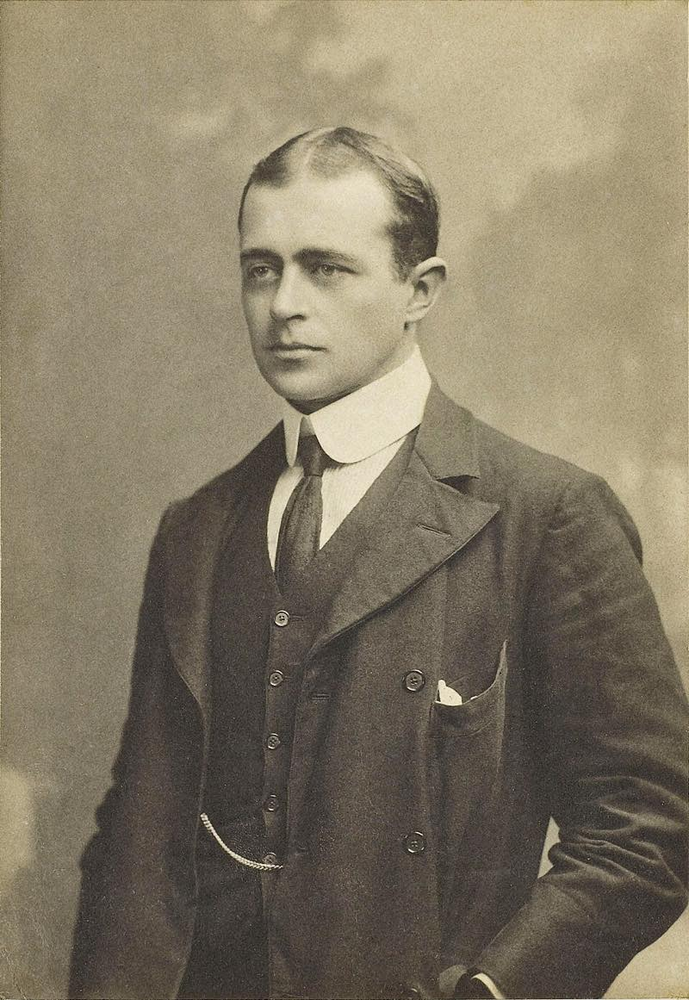
Now for the run home and a desperate struggle. I wonder if we can do it.Robert Falcon Scott 1868–1912 Scott's Last Expedition, Vol. I: Being the Journals of Captain R. F. Scott (arranged by Leonard Huxley; London: Smith, Elder & Co.), 1913 · Journal entry of Wednesday, 17 January 1912, at the South Pole Foto: J. Thomson (1837–1921), Public domain, via Wikimedia Commons (https://commons.wikimedia.org/wiki/File:Robert_Falcon_Scott_c1900.jpg) · Public domain


A man must shape himself to a new mark directly the old one goes to ground.Ernest Shackleton 1874–1922 South: The Story of Shackleton's Last Expedition, 1914–1917 (London: William Heinemann), 1919 · Chapter IV, 'Loss of the Endurance' Foto: George Charles Beresford (restoration by Adam Cuerden); National Library of Norway, Public domain, via Wikimedia Commons (https://commons.wikimedia.org/wiki/File:Ernest_Shackleton_before_1909.jpg) · Public domain

Difficulties are just things to overcome after all.Ernest Shackleton 1874–1922 The Heart of the Antarctic: Being the Story of the British Antarctic Expedition 1907–1909, Vol. I (London: William Heinemann), 1909 · Vol. I, Chapter XXII, 'On the Great Glacier', p. 321 — diary passage under December 11 (1908), ascending the Beardmore Glacier (Chapter XIII in the 1910 one-volume Musson edition) Foto: George Charles Beresford (restoration by Adam Cuerden); National Library of Norway, Public domain, via Wikimedia Commons (https://commons.wikimedia.org/wiki/File:Ernest_Shackleton_before_1909.jpg) · Public domain
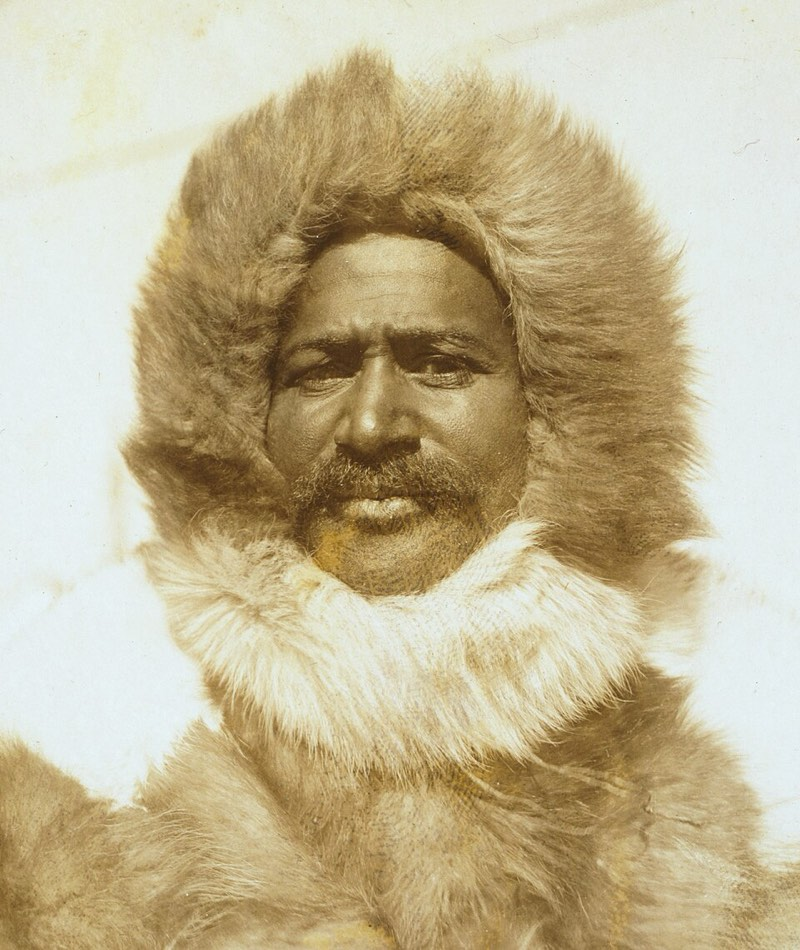
The lure of the Arctic is tugging at my heart, to me the trail is calling!Matthew Henson 1866–1955 A Negro Explorer at the North Pole (New York: Frederick A. Stokes), 1912 · Chapter XXI, 'Etah to New York — Coming of Mail and Reporters — Home!' (closing pages) Foto: Unknown photographer (Library of Congress, cph.3g07503), Public domain, via Wikimedia Commons (https://commons.wikimedia.org/wiki/File:Matthew_Henson_1910.jpg) · Public domain

I always have a comfortable feeling that nothing is impossible if one applies a certain amount of energy in the right direction.Nellie Bly 1864–1922 Around the World in Seventy-Two Days (New York: Pictorial Weeklies Company), 1890 · Chapter I, 'A Proposal to Girdle the Earth' Foto: H. J. Myers, photographer (Library of Congress, cph.3b22819), Public domain, via Wikimedia Commons (https://commons.wikimedia.org/wiki/File:Nellie_Bly_2.jpg) · Public domain

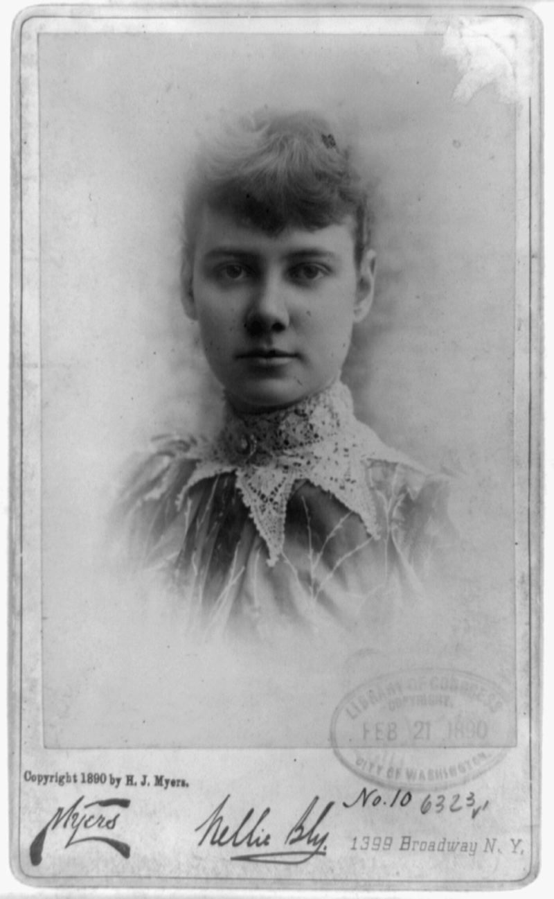
If you want to do it, you can do it. The question is, do you want to do it?Nellie Bly 1864–1922 Around the World in Seventy-Two Days (New York: Pictorial Weeklies Company), 1890 · Chapter I, 'A Proposal to Girdle the Earth' Foto: H. J. Myers, photographer (Library of Congress, LCCN 89711960), Public domain, via Wikimedia Commons (https://commons.wikimedia.org/wiki/File:Nellie_Bly_-_Myers,_N.Y._LCCN89711960.jpg) · Public domain

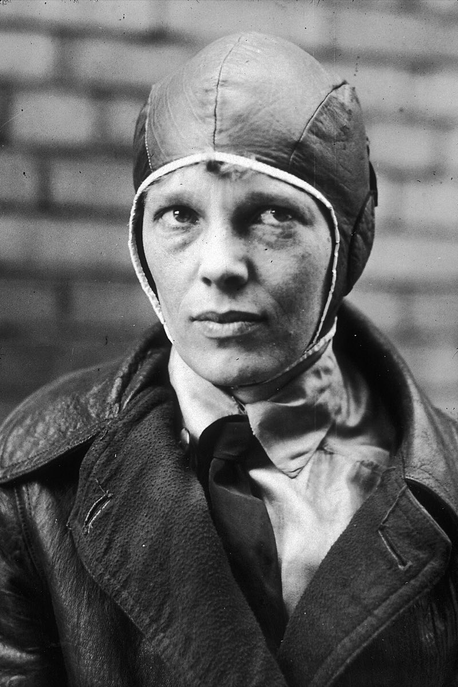
Courage is the price that Life exacts for granting peace.Amelia Earhart 1897–1937 20 Hrs. 40 Min.: Our Flight in the Friendship (New York: G. P. Putnam's Sons), 1928 · Opening line of her poem 'Courage', printed in Marion Perkins's Introduction to the book (Perkins says Earhart handed her the verses the year before) Foto: Wide World Photos, Public domain, via Wikimedia Commons (https://commons.wikimedia.org/wiki/File:Amelia_Earhart,_1928.jpg) · Public domain

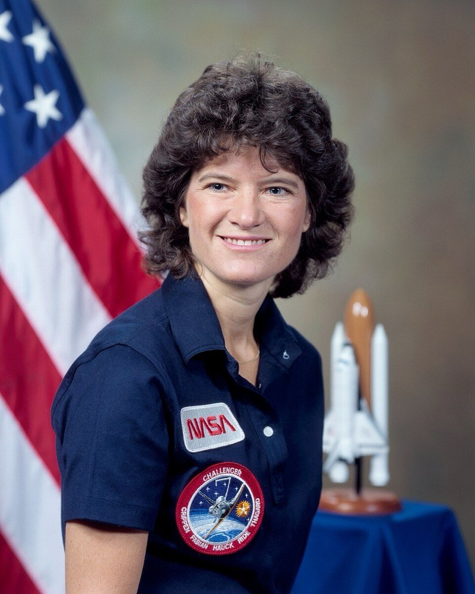
I don’t even remember having specific goals, other than to fly in space!Sally Ride 1951–2012 NASA Johnson Space Center Oral History Project, interview by Rebecca Wright (San Diego, 22 October 2002), 2002 · Transcript p. 7, answering what her goals were on becoming an astronaut candidate Foto: NASA (retouched by Coffeeandcrumbs), Public domain, via Wikimedia Commons (https://commons.wikimedia.org/wiki/File:Sally_Ride_(1984).jpg) · Public domain
.jpg){kind=link}

That's one small step for (a) man; one giant leap for mankind.Neil Armstrong 1930–2012 Apollo 11 air-to-ground transmission, as corrected in the Apollo 11 Lunar Surface Journal (NASA, ed. Eric M. Jones), 'One Small Step', 1969 · Mission elapsed time 109:24:23, 20 July 1969 (21 July UTC), as Armstrong stepped off the LM footpad Foto: NASA (photo S69-31741), Public domain, via Wikimedia Commons (https://commons.wikimedia.org/wiki/File:Neil_Armstrong_pose.jpg) · Public domain

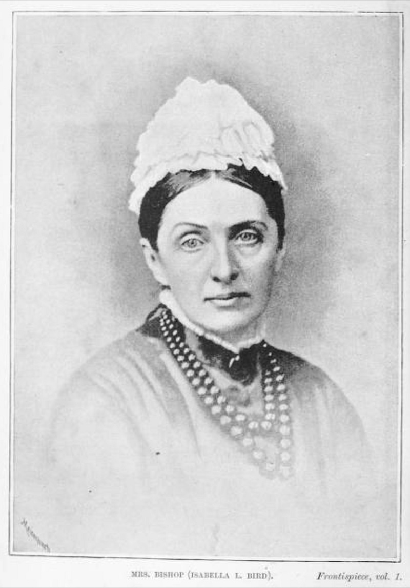
But what are cuts, bruises, fatigue, and singed eyelashes, in comparison with the awful sublimities I have witnessed to-day?Isabella Bird 1831–1904 The Hawaiian Archipelago: Six Months Among the Palm Groves, Coral Reefs, and Volcanoes of the Sandwich Islands (London: John Murray), 1875 · Letter XXIX, 'Crater House, Kilauea, June 4th' (p. 381 in the edition transcribed by Project Gutenberg), after descending into the Kilauea crater Foto: Frontispiece of Journeys in Persia and Kurdistan, vol. 1 (London: John Murray, 1891), Public domain, via Wikimedia Commons (https://commons.wikimedia.org/wiki/File:Isabella_L._Bird.png) · Public domain

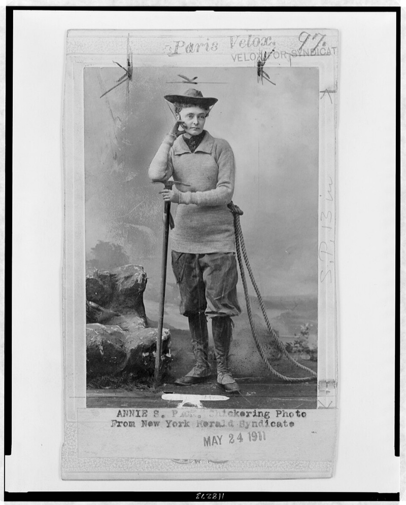
If the first attempt fails of course we must try again.Annie Smith Peck 1850–1935 A Search for the Apex of America: High Mountain Climbing in Peru and Bolivia, Including the Conquest of Huascarán (New York: Dodd, Mead and Company), 1911 · Chapter II, 'The Voyage' — on how many attempts the climb might take Foto: Unknown photographer, 1911 (Library of Congress, LCCN 97504565), Public domain, via Wikimedia Commons (https://commons.wikimedia.org/wiki/File:Miss_Annie_S._Peck,_full-length_portrait,_facing_slightly_right_LCCN97504565.jpg) · Public domain

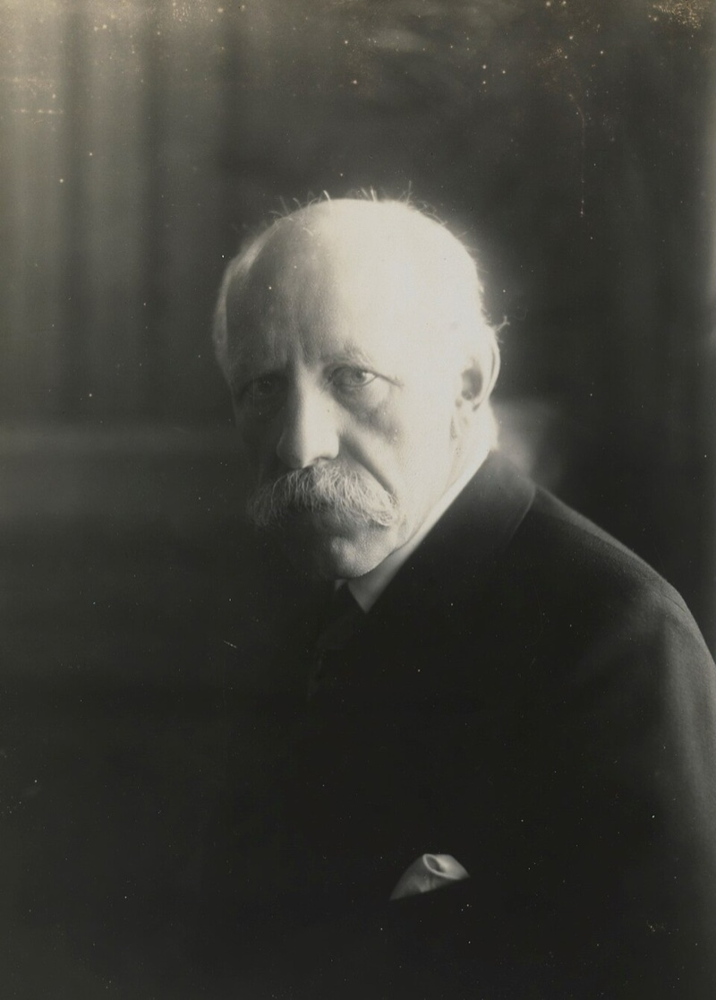
The old beaten tracks do not take us to our goal.Fridtjof Nansen 1861–1930 Adventure (rectorial address, University of St Andrews, 3 November 1926), in Adventure, and Other Papers (London: Hogarth Press / L. & Virginia Woolf), 1927 · 'Adventure', p. 19 Foto: Studio Phebus (National Library of Norway), Public domain, via Wikimedia Commons (https://commons.wikimedia.org/wiki/File:Fridtjof_Nansen_(1861-1930)_portrait.jpg) · Public domain
_portrait.jpg){kind=link}
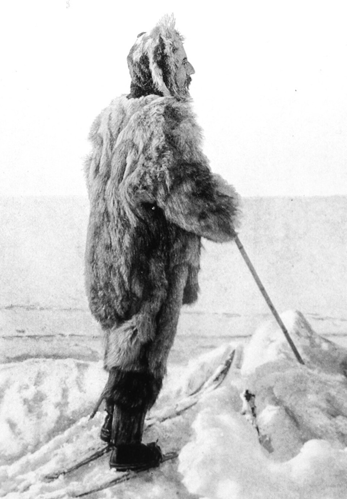
We had agreed to shrink from nothing in order to reach our goal.Roald Amundsen 1872–1928 Sydpolen: Den norske sydpolsfærd med Fram 1910–1912 (The South Pole), 1912 · Norwegian: Bind 2, p. 62 (Kristiania: Jacob Dybwad, 1912); English: Chater tr., Vol. II, Chapter XI 'Through the Mountains' · Overs. A. G. Chater Foto: Anders Beer Wilse (frontispiece of The South Pole, Vol. II), Public domain, via Wikimedia Commons (https://commons.wikimedia.org/wiki/File:Amundsen-in-ice.jpg) · Public domain

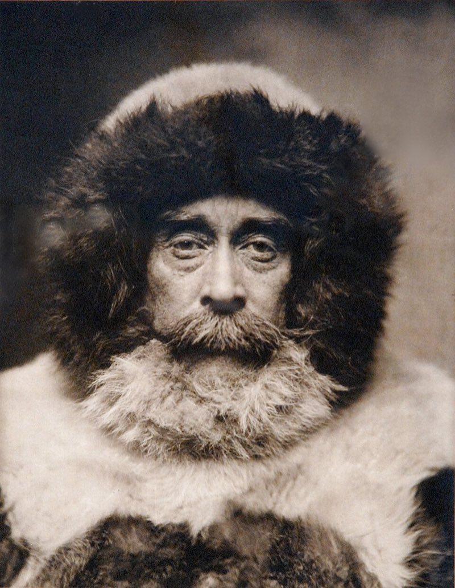
The Pole at last. The prize of three centuries. My dream and goal for twenty years. Mine at last!Robert E. Peary 1856–1920 The North Pole: Its Discovery in 1909 under the Auspices of the Peary Arctic Club (New York: Frederick A. Stokes), 1910 · Chapter XXXII, 'We Reach the Pole' — the words Peary says he wrote in his diary on waking at Camp Jesup, 6 April 1909 Foto: Benjamin B. Hampton (photogravure, 1909), Public domain, via Wikimedia Commons (https://commons.wikimedia.org/wiki/File:Robert_Peary_by_Hampton,_1909.jpg) · Public domain

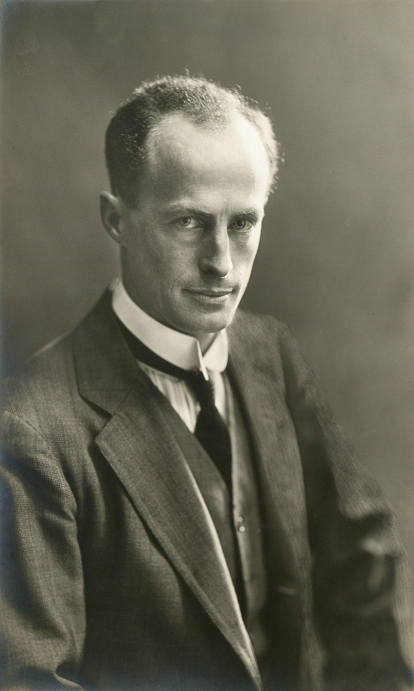
New power seemed to come as I addressed myself to one last tremendous effort.Douglas Mawson 1882–1958 The Home of the Blizzard: Being the Story of the Australasian Antarctic Expedition, 1911–1914 (London: William Heinemann), 1915 · Vol. I, Chapter XIII, 'Toil and Tribulation' — climbing out of a crevasse on his solo return journey, January 1913 Foto: State Library of South Australia (studio portrait, 1914), Public domain, via Wikimedia Commons (https://commons.wikimedia.org/wiki/File:Douglas_Mawson,_1914.jpg) · Public domain

America's challenge of today has forged man's destiny of tomorrow.Eugene Cernan 1934–2017 Apollo 17 air-to-ground transmission, Apollo 17 Lunar Surface Journal (NASA, ed. Eric M. Jones), 'EVA-3 Closeout', 1972 · Mission elapsed time 170:41:00, 14 December 1972 (UTC), Cernan's farewell remarks before climbing into the LM as the last person on the Moon Foto: NASA (photo S71-51308), Public domain, via Wikimedia Commons (https://commons.wikimedia.org/wiki/File:Cernan_s71-51308_(3x4_cropped).jpg) · Public domain
.jpg){kind=link}
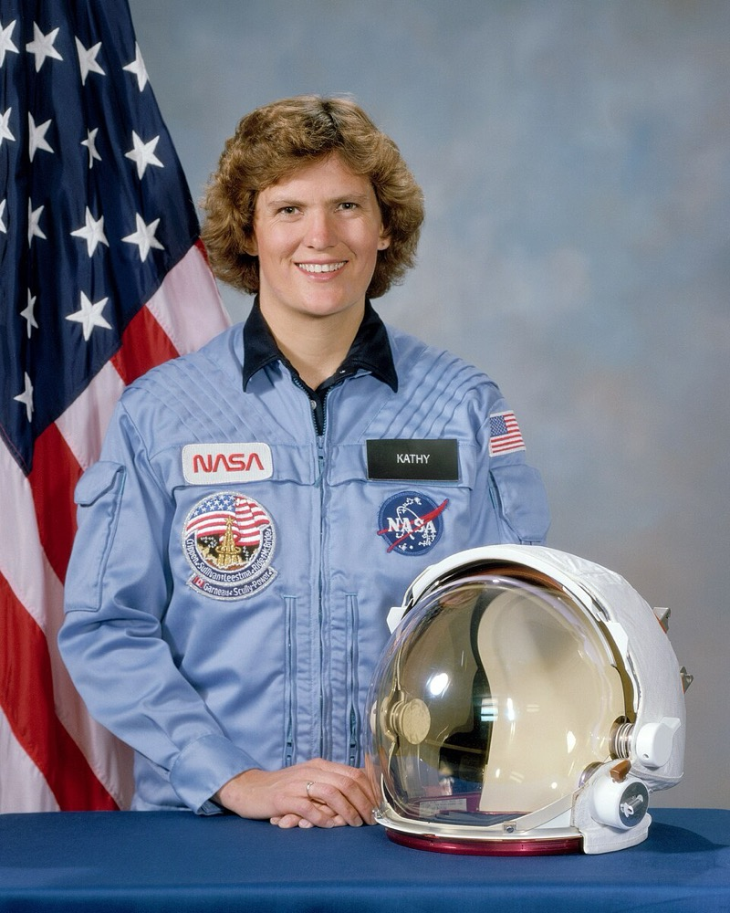
You can just focus on the task, and you're just living in the suit.Kathryn D. Sullivan b. 1951 NASA Johnson Space Center Oral History Project, interview by Jennifer Ross-Nazzal (Columbus, Ohio, 12 March 2008), 2008 · Transcript p. 12, on spacewalking: after training, the suit is so familiar that only the task remains Foto: NASA (official astronaut portrait), Public domain, via Wikimedia Commons (https://commons.wikimedia.org/wiki/File:Kathryn_D._Sullivan.jpg) · Public domain